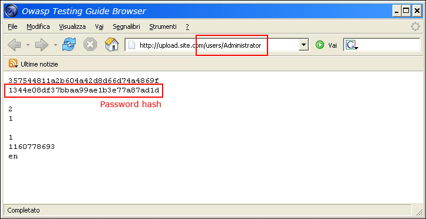

Обход схемы авторизации¶
| ID |
|---|
| WSTG-ATHZ-02 |
Резюме¶
Данный тестовый сценарий направлен на выявление недостатков авторизации, при которых аутентифицированный пользователь получает возможность обращаться к ресурсам или выполнять действия, выходящие за рамки назначенных ему прав, включая горизонтальное и вертикальное повышение привилегий (Horizontal and Vertical Privilege Escalation).
Хотя некоторые проверки могут включать такие сценарии, как прямой доступ к защищенным ресурсам без активной сессии или после выхода из системы (logout), основная цель этого теста — подтвердить, что механизмы контроля авторизации строго соблюдаются для аутентифицированных пользователей и ролей.
Подробные сценарии неаутентифицированного доступа и проверок после аутентификации рассмотрены в разделе How to Test.
Цели тестирования¶
- Оценить возможность неаутентифицированного, горизонтального или вертикального доступа.
Методика тестирования¶
- Доступ к ресурсам и выполнение операций без авторизации. — Прямой запрос страниц (принудительный просмотр, forced browsing)
- Горизонтальный доступ к ресурсам и операциям.
- Вертикальный доступ к ресурсам и операциям.
Базовый неаутентифицированный доступ¶
Ручное тестирование с помощью браузера¶
Если веб-приложение не обеспечивает надлежащего применения механизмов контроля доступа, конфиденциальные ресурсы оказываются открытыми, позволяя неаутентифицированным пользователям просматривать их. Например, если пользователь запрашивает защищенную страницу напрямую с помощью принудительного просмотра (forced browsing), эта страница может не проверить авторизацию анонимного пользователя перед предоставлением доступа. Попробуйте обратиться к защищенной странице напрямую через адресную строку браузера для проверки этим методом.

Figure 4.5.2-1: Direct Request to Protected PageИспользование автоматизации¶
Данный процесс можно автоматизировать при наличии списка всех эндпоинтов с помощью таких инструментов, как ffuf, gobuster, OWASP ZAP и Burp Suite Intruder.
В OWASP ZAP использование аддона Access Control Testing позволяет тестировщикам определять, какие части приложения доступны анонимным пользователям, и выявлять потенциальные проблемы контроля доступа.
В Burp Suite встроенные инструменты (такие как Intruder) и набор плагинов, включая Autorize, помогают тестировщику автоматизировать тестирование авторизации.
Горизонтальный обход¶
Для каждой функции, конкретной роли или запроса, выполняемого приложением, необходимо проверить:
- Возможно ли получить доступ к ресурсам, которые должны быть доступны пользователю с другой идентичностью, обладающему той же ролью или уровнем привилегий?
- Возможно ли выполнять операции над ресурсами, которые должны быть доступны пользователю с другой идентичностью?
Для каждой роли:
- Зарегистрируйте или создайте двух пользователей с идентичными привилегиями.
- Установите и поддерживайте две активные сессии (по одной для каждого пользователя).
- Для каждого запроса замените релевантные параметры и идентификатор сессии (токен первого пользователя на токен второго пользователя) и проанализируйте ответы для каждого токена.
- Приложение считается уязвимым, если ответы совпадают, содержат одинаковые приватные данные либо указывают на успешное выполнение операции над ресурсами или данными другого пользователя.
Например, предположим, что функция viewSettings входит в меню учетной записи приложения для одной и той же роли, и доступ к ней осуществляется по URL-адресу: https://www.example.com/account/viewSettings. При вызове функции viewSettings генерируется следующий HTTP-запрос:
POST /account/viewSettings HTTP/1.1
Host: www.example.com
[other HTTP headers]
Cookie: SessionID=USER_SESSION
username=example_user
Легитимный и корректный ответ:
HTTP1.1 200 OK
[other HTTP headers]
{
"username": "example_user",
"email": "example@email.com",
"address": "Example Address"
}
Злоумышленник может попытаться выполнить этот запрос со своим сессионным идентификатором, изменив параметр username на другого пользователя:
POST /account/viewSettings HTTP/1.1
Host: www.example.com
[other HTTP headers]
Cookie: SessionID=ATTACKER_SESSION
username=victim_user
Если ответ злоумышленнику содержит данные victim_user, значит приложение уязвимо к атакам горизонтального перемещения (lateral movement), при которых один пользователь может читать или изменять данные другого пользователя.
Шаги 3 и 4 можно автоматизировать. Вкладка Authorize в инструменте Gori повторяет перехваченный запрос под несколькими учетными записями и сравнивает каждый ответ с эталонным (baseline). Идентичность (identity) представляет собой именованный набор изменений заголовков: сохранение перехваченной сессии жертвы, подстановка токена второго пользователя или удаление сессионных заголовков для проверки от имени анонимного клиента.
Команда gori run authorize выполняет аналогичное воспроизведение для автоматизации в скриптах, считывая идентичности из файла:
[
{ "name": "victim (baseline)", "baseline": true },
{ "name": "other-user", "set": [{ "name": "Authorization", "value": "Bearer <other-user-jwt>" }] },
{ "name": "anonymous", "remove": ["Authorization"] }
]
Запуск проверки для запроса корзины покупок одного из пользователей в OWASP Juice Shop:
$ gori run authorize --query "path:/rest/basket/6" --identities identities.json
authorizing 1 request × 3 identities (victim (baseline), other-user, anonymous) = 3 requests
[!] BYPASS #1 GET http://localhost:3000/rest/basket/6 · 1 of 2 identities matched the baseline
victim (baseline) baseline 200 154B -
other-user same 200 154B Δ status 200 · size same · time -11 ms
anonymous different 401 984B Δ status 200 → 401 · size +830 B · time -22 ms
done · 1 request replayed · 3 sends · 1 possible bypass
Идентичность other-user получает точно такой же ответ 200, как и жертва, то есть эндпоинт не проверяет, принадлежит ли корзина вызывающему пользователю. При этом идентичность anonymous корректно отклоняется с кодом 401.
Доступ к административным функциям¶
Например, предположим, что функция addUser является частью административного меню приложения и доступ к ней возможен по адресу: https://www.example.com/admin/addUser.
В таком случае при вызове функции addUser формируется следующий HTTP-запрос:
Дальнейший анализ и вопросы строятся в следующем направлении:
- Что произойдет, если непривилегированный пользователь попытается выполнить этот запрос?
- Будет ли создан пользователь?
- Если да, сможет ли новый пользователь применить полученные привилегии?
Доступ к ресурсам, назначенным другой роли¶
Многие приложения разграничивают доступ к ресурсам на основе ролей пользователей. Рассмотрим пример с резюме (CV), загружаемыми через форму вакансий в S3-бакет.
Попробуйте получить доступ к расположению этих файлов под учетной записью обычного пользователя. Если вам удается прочитать, изменить или удалить их, значит, приложение уязвимо.
Обработка специальных заголовков запросов¶
Некоторые приложения поддерживают нестандартные заголовки, такие как X-Original-URL или X-Rewrite-URL, позволяющие перезаписать целевой URL запроса значением, указанным в заголовке.
Эту особенность можно поэксплуатировать в ситуациях, когда приложение расположено за промежуточным компонентом (reverse proxy, WAF), применяющим ограничения контроля доступа на основе URL запроса.
Типичным ограничением контроля доступа на основе URL может быть, например, блокировка доступа из сети Интернет к административной консоли, доступной по путям /console или /admin.
Для проверки поддержки заголовков X-Original-URL или X-Rewrite-URL выполняются следующие шаги.
1. Отправка обычного запроса без заголовков X-Original-Url и X-Rewrite-Url¶
2. Отправка запроса с заголовком X-Original-Url, указывающим на несуществующий ресурс¶
3. Отправка запроса с заголовком X-Rewrite-Url, указывающим на несуществующий ресурс¶
Если ответ на любой из этих запросов содержит признаки того, что ресурс не найден, это указывает на то, что приложение обрабатывает специальные заголовки запросов. Такими признаками могут быть HTTP-статус 404 или сообщение «resource not found» в теле ответа.
После подтверждения поддержки заголовков X-Original-URL или X-Rewrite-URL попытку обхода ограничений контроля доступа можно реализовать следующим образом: отправить требуемый запрос в приложение, указав «разрешенный» фронтенд-компонентом URL в качестве основного пути запроса, а реальный целевой URL передать в заголовке X-Original-URL или X-Rewrite-URL (в зависимости от того, какой из них поддерживается). Если поддерживаются оба, протестируйте их поочередно, чтобы выяснить, для какого из заголовков обход оказывается эффективным.
4. Другие заголовки, на которые следует обратить внимание¶
Зачастую панели администратора или административный функционал доступны только клиентам из локальных сетей, поэтому злоумышленник может использовать различные HTTP-заголовки проксирования и перенаправления для получения доступа. Заголовки и значения для тестирования включают:
- Заголовки:
X-Forwarded-ForX-Forward-ForX-Remote-IPX-Originating-IPX-Remote-AddrX-Client-IP
- Значения:
127.0.0.1(или любой адрес из подсети127.0.0.0/8)::1(единственный официальный loopback-адрес в IPv6)localhost- Любые адреса согласно RFC1918:
10.0.0.0/8172.16.0.0/12192.168.0.0/16
- Link-local адреса:
169.254.0.0/16 - IPv4-сопоставленные IPv6-адреса (
::ffff:0:0/96) в точечно-десятичном или шестнадцатеричном формате, например::ffff:127.0.0.1или::ffff:7f00:1(оба эквивалентны127.0.0.1) - Реже — префикс NAT64
64:ff9b::/96, например64:ff9b::7f00:1(127.0.0.1), если приложение извлекает встроенный IPv4-адрес
Примечание: Указание порта вместе с адресом или именем хоста также может помочь обойти пограничные средства защиты, такие как межсетевые экраны веб-приложений (WAF) и т. д. Например:
127.0.0.4:80,127.0.0.4:443,127.0.0.4:43982
Рекомендации по устранению¶
Применяйте принцип наименьших привилегий (Principle of Least Privilege) к пользователям, ролям и ресурсам, чтобы исключить возможность несанкционированного доступа.
Инструменты¶
- Zed Attack Proxy (ZAP)
- PortSwigger Burp Suite
- Gori
- Вкладка Authorize воспроизводит запрос под различными идентичностями для обнаружения обхода контроля доступа; поддерживает запуск через CLI:
gori run authorize.
- Вкладка Authorize воспроизводит запрос под различными идентичностями для обнаружения обхода контроля доступа; поддерживает запуск через CLI:
Ссылки и материалы¶
OWASP Application Security Verification Standard 4.0.1, v4.0.1-1, v4.0.1-4, v4.0.1-9, v4.0.1-16